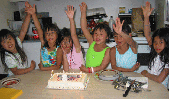

Family Match

FCC BC has collaborated with two local agencies to establish a Family Match Program, giving our FCC families an opportunity to develop a personal friendship with a Chinese family.
This is a wonderful way to bring Chinese people and culture into our lives; on a personal level and at our own individual family's pace. This is not a group event nor a structured activity.
This Family Match program is designed to match your family with a Chinese family with whom you then arrange the timing and nature of your get-togethers. Sometimes these are planned outings, sometimes these get-togethers take place at one another's home. They may include all family members or only a few. It's up to you. It's about taking time to introduce your family and your lifestyle to your new friends, and being open to discovering who and what they are all about.
This program is about reciprocity and a mutual exchange of cultures.
These new immigrant families are from all walks of life, with parents and children ready to make friends. Many are highly educated and have left behind professional careers. In addition to the many formal programs and services they are involved in, helping them to adjust and integrate successfully into Canadian society, they are looking for personal and informal connections as well.
They are interested in making friends with a Canadian family with whom and through whom they can become increasingly familiar with Canadian customs and traditions, informally pick up on proceedure and protocol, and practice speaking and perfecting their English.
Through this Family Match Program these new immigrant families have become familiar with 'Families With Children From China', our transracial and adoptive family makeup, and our interest in developing and enhancing our Chinese cultural competency. They are pleased and eager to introduce our families to Chinese nuance, customs, and traditions, and express respect and a kindred spirit for our Chinese adopted children.
If your family would like to participate, contact to organize a match. You can also contact the S.U.C.C.E.S.S./FCC Family Match/Host Program directly to apply for a Match.
The contact person at S.U.C.C.E.S.S. TRI-cities area is: Shirley TSANG - 604 936-5900
The contact person at S.U.C.C.E.S.S. Richmond area is: Augustus CHEUNG 604 279-7180

FCC BC continues to explore possibilities with other agencies in the Lower Mainland and outlying regions, in order to develop and establish Family Match Programs for those who live in areas not reached by either S.U.C.C.E.S.S. or ISS. Please contact if you are living in an outlying region and can assist in acting as a liaison in setting up this program.
Stay tuned to the newsletter and FCC Website for news of these program developments, and for stories and reports from FCC members about the progress and success of their Family Matches.